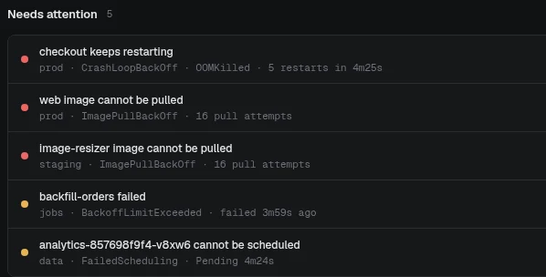
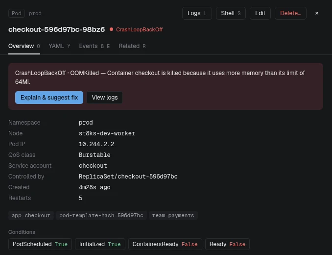
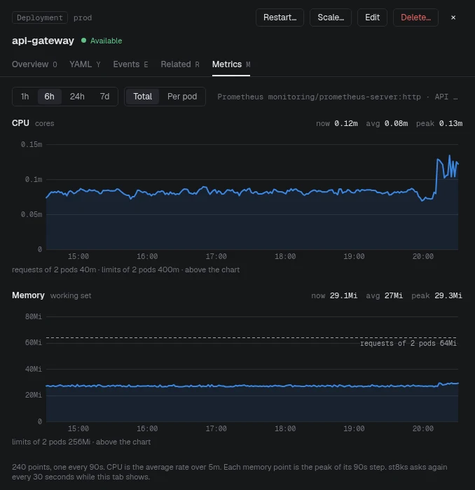
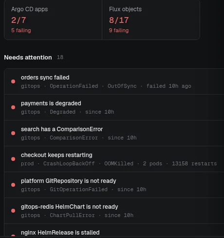
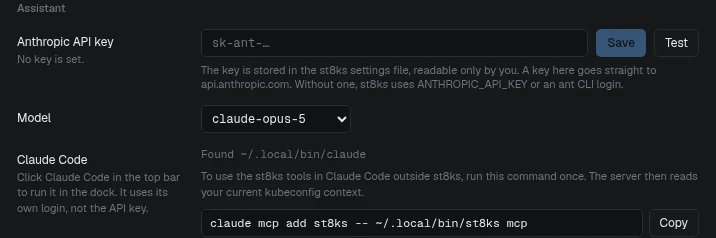
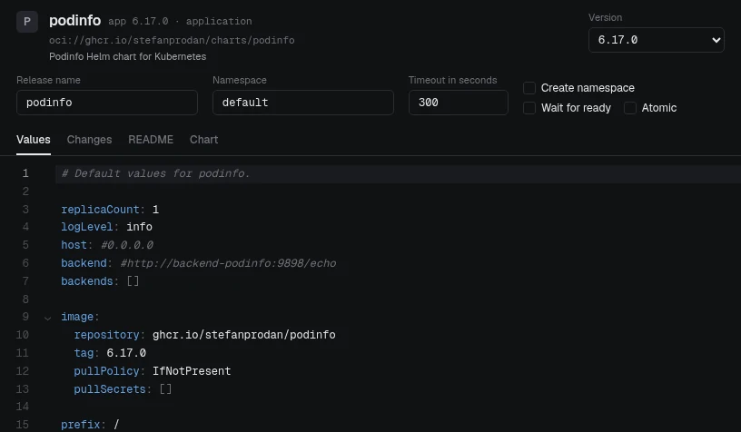
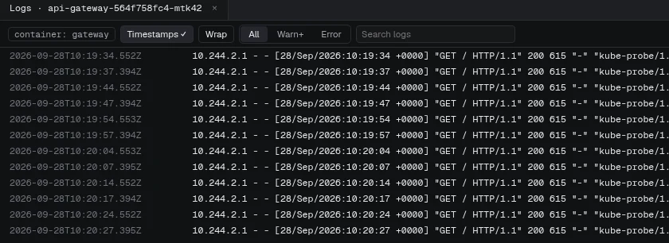
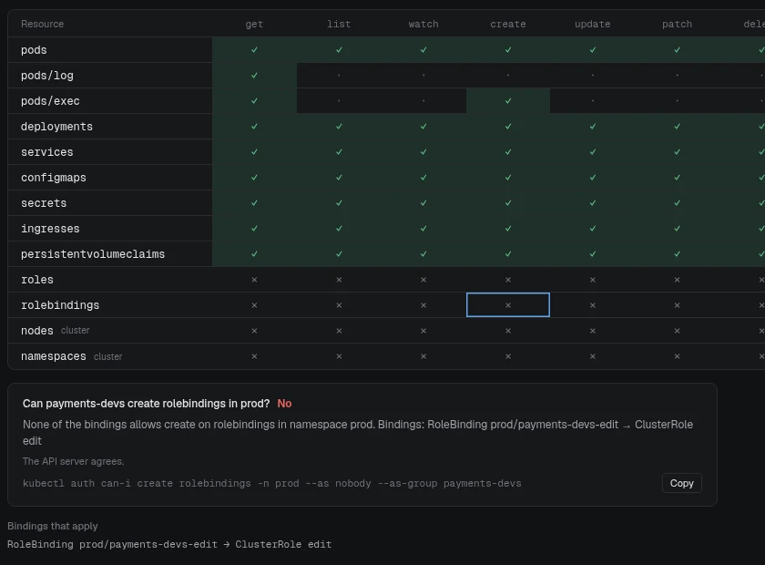
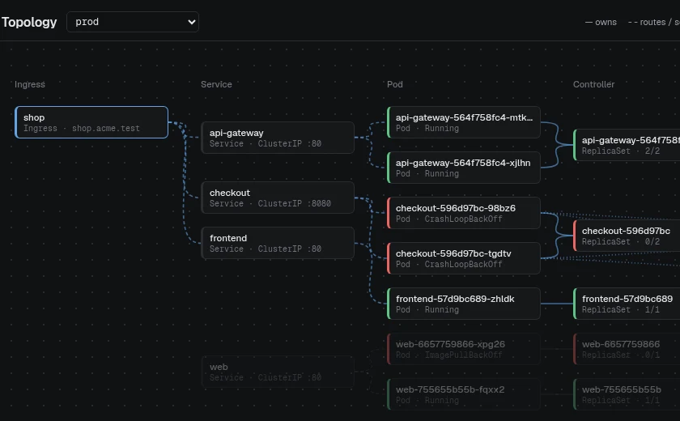

Find what is broken.
Fix it as a diff.
st8ks is a Kubernetes desktop client for Linux, macOS and Windows. It finds the workloads that fail and proposes a fix as a YAML diff. The API server dry-runs the fix before you apply it.
Free and open source, MITNo accountLatest release
Deploymentprod
checkoutUnavailable
deployment.apps/checkout configured (server dry run) · schema valid · admission webhooks passed
New in v0.3.0: metrics history, GitOps, Helm install and Claude CodeOther platforms and checksums
See st8ks in 90 seconds
From an OOM kill to a passed server dry run. Then metrics, GitOps, Helm, logs, RBAC, topology, the IDE and Claude Code. Recorded in st8ks on the local test cluster of the repository.
The same on-call work, with kubectl and with st8ks
diff --git a/on-call b/on-call --- kubectl what you type today +++ st8ks what st8ks shows you
@@ -1,2 +1,1 @@ See what is broken
kubectl get pods -A | grep -v Runningkubectl get events -A --sort-by=.lastTimestampst8ks detects crash loops, OOM kills, missing images, pods that cannot be scheduled, stuck rollouts and failed jobs. It groups the pods of one workload into one issue.

@@ -3,2 +2,1 @@ Read the evidence in one place
kubectl describe pod checkout-596d97bc-98bz6 -n prodkubectl logs checkout-596d97bc-98bz6 -n prod --previousThe pod shows the reason, the last state, the limits, the conditions and the events. The read-only assistant explains the cause with the Claude API and your own key.

@@ -5,2 +3,1 @@ Check every change before it reaches the cluster
kubectl edit deployment checkout -n prodkubectl rollout restart deployment/checkout -n prodAn edit shows as a YAML diff, and the server dry run checks it. A restart, scale, delete or rollback opens a confirmation with Dry run first. In a protected context or namespace, you type the object name to confirm.
More tools in the same window
@@ -7,2 +4,1 @@ See CPU and memory over time
kubectl top pod checkout-596d97bc-98bz6 -n prod --containerskubectl port-forward svc/prometheus-server 9090:80 -n monitoringThe Metrics tab shows the CPU and memory history of a pod, workload or node from Prometheus, with the requests and limits. st8ks finds Prometheus itself and queries it through the API server.

@@ -9,3 +5,1 @@ Find the GitOps sync that fails
argocd app get shopflux get kustomizations -A --status-selector ready=falseargocd app sync shopArgo CD Applications and Flux objects that fail show in Needs attention with the cause. Sync, Refresh, Reconcile, Suspend and Resume open a confirmation with an optional server dry run.

@@ -12,2 +6,1 @@ Give Claude Code the cluster, not your clipboard
kubectl describe pod checkout-596d97bc-98bz6 -n prod | pbcopykubectl logs checkout-596d97bc-98bz6 -n prod --previous | pbcopyst8ks mcp gives Claude Code and other MCP clients read-only tools for issues, logs, RBAC, topology and dry runs. st8ks removes Secret values first. Claude Code also runs in the dock with the connected context.

@@ -14,4 +7,1 @@ Install a chart, roll back a release
helm repo add podinfo https://stefanprodan.github.io/podinfohelm install web podinfo/podinfo -n prod -f values.yaml --dry-run=serverhelm history web -n prodhelm rollback web 1 -n prodInstall a chart from a repository or an OCI registry. Edit the values and run a server dry run first. Revision history, rollback, uninstall, and upgrade with edited values.

@@ -18,3 +8,1 @@ Stream logs, open a shell, forward a port
kubectl logs -f deployment/api-gateway -n prodkubectl exec -it api-gateway-564f758fc4-mtk42 -n prod -- shkubectl port-forward svc/api-gateway 8080:80 -n prodLogs keep the newest 100,000 lines and filter as you type. Shells, debug containers and port-forwards open from the pod.

@@ -21,1 +9,1 @@ Know who can do what
kubectl auth can-i create rolebindings -n prod --as nobody --as-group payments-devsThe RBAC explorer names the binding and the rule behind each permission. The API server confirms each answer.

@@ -22,1 +10,1 @@ Trace traffic from ingress to pod
kubectl get ingress,svc,endpoints,pods -n prod -o wideThe topology graph connects each ingress, service, pod, ReplicaSet and Deployment. A pod that fails shows on its path.

@@ -23,3 +11,1 @@ Edit manifests in Git
kubectl diff -f k8s/kubectl apply --server-side -f k8s/git commit -am "Raise the checkout memory limit" && git pushThe IDE checks your manifests against the cluster schema and the live pods. It shows the diff to the cluster, applies with server-side apply, and commits and pushes.
Fast with thousands of objects
Typed protobuf watches, rows that change in place, and a virtual list keep st8ks at 60 frames per second. These numbers come from 6,019 ConfigMaps in one list, in Chromium on Linux.
To repeat the test, run make cluster-up and hack/dev-cluster/load.sh 6000.
| Operation | Result |
|---|---|
| Open the list of 6,019 ConfigMaps | 226 ms |
| Filter keystroke to paint | 1 to 2 frames |
| Sort by a column | 37 ms |
| Scroll | 60 fps, p95 frame 17.1 ms |
| All 6,000 objects change at once | No long task, p95 frame 16.9 ms |
| Connect and load all pods of a 3-node cluster | 330 ms |
Your machine, your kubeconfig, your key
- License
- MIT. Read, change and share the code.
- Account
- None. st8ks has no login and sends no telemetry.
- Network
- st8ks connects to your clusters, and reads Prometheus through the API server or at a URL that you set. It connects to a chart repository or registry only when you add, update or install a chart, and to the Anthropic API only when you ask the assistant.
- Kubeconfig
- The same files as kubectl:
KUBECONFIG,~/.kube/configand the other files in~/.kube. Exec plugins such asaws,gke-gcloud-auth-pluginandkubeloginwork. - Changes
- Restart, scale, delete, rollback, sync and reconcile open a confirmation with an optional server dry run. In a protected context or namespace, you type the object name to confirm. The MCP tools for AI agents cannot change the cluster.
What is new in each release
-
+
Claude Code and MCP.
st8ks mcpgives AI agents read-only tools for the cluster, with Secret values removed. Claude Code runs in the dock with the connected context.+Metrics history. CPU and memory charts from Prometheus for pods, workloads and nodes, with the requests and limits.
+GitOps. Argo CD Applications and Flux objects that fail show in Needs attention. Sync, refresh and reconcile them with a dry run.
+Helm chart install. Install from a chart repository or an OCI registry. Edit the values and run a server dry run first.
FixGo 1.27.3 fixes 9 vulnerabilities that govulncheck reported.
-
+
IDE for manifests in Git. Check manifests against the cluster schema and the live pods while you type. Compare with the cluster, apply with server-side apply, then commit and push.
-
+
Text size. From 80 % to 150 %, with Ctrl +, Ctrl - and Ctrl 0.
+Clusters view. Delete contexts and remove kubeconfig sources. st8ks deletes no file.
+Test the API key. A Test button in Settings shows why the Anthropic API rejects a key.
FixThe assistant sends the saved API key only to
api.anthropic.com.FixA fast scroll or a filter no longer shows empty rows for one frame.
-
+
The first release. Live lists for every kind and CRD, issues with fixes as YAML diffs, logs, shells, port-forwards, RBAC, Helm releases, topology and the assistant.
Download st8ks
Download the latest release| Platform | File |
|---|---|
| macOS 12 or later, Apple silicon and Intel | st8ks-darwin-universal.dmg |
| Windows 10 or 11, x64 | st8ks-windows-amd64-setup.exe |
| Windows 11, Arm | st8ks-windows-arm64-setup.exe |
| Linux x86-64 | st8ks-linux-amd64.tar.gz |
| Linux Arm64 | st8ks-linux-arm64.tar.gz |
| SHA256 checksums of all files | checksums.txt |
# Open your current context
st8ks
# Open this context first
st8ks --context prod-eu
# Read only this kubeconfig file
st8ks --kubeconfig ~/clusters/lab.yamlPress Ctrl K, or ⌘K on macOS, to search resources and run commands. The installation guide covers Gatekeeper, SmartScreen and checksums.
curl -fsSLO https://github.com/bjarneo/st8ks/releases/latest/download/st8ks-linux-amd64.tar.gz
tar -xzf st8ks-linux-amd64.tar.gz
./st8ks-linux-amd64/install.shLinux needs GTK 3, WebKitGTK 4.1 and glibc 2.39 or later. The script copies st8ks to ~/.local/bin and adds a desktop entry.